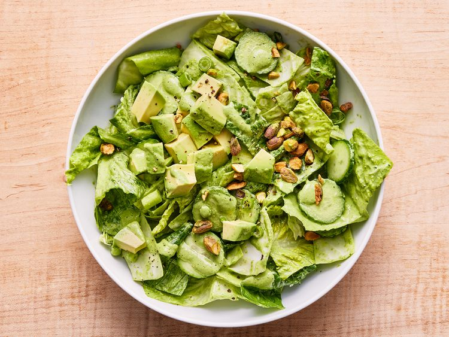

Green Goddess Salad

This bowl is just as delicious and scoop-able. Use a food processor
to shred and chop the cabbage if your knife skills aren't up to the task.
The dressing is so tasty that we recommend mixing up an extra batch to use
on grilled veggies, fish and even as a sauce for pizza!
Ingredients
Dressing
- 1 cup baby spinach
- 1 cup coarsely chopped fresh flat-leaf parsley
- ⅓ cup loosely packed fresh basil leaves
- 3 tablespoons chopped fresh chives
- 2 tablespoons coarsely chopped tarragon leaves
- ½ medium shallot, peeled, coarsely chopped
- 1 small garlic clove, peeled and chopped
- ½ teaspoon anchovy paste
- ¼ cup fresh lime juice (from 2 medium limes)
- 6 tablespoons olive oil
- ½ cup mayonnaise
- ¾ teaspoon kosher salt
Salad
- 4 cups chopped green cabbage
- 4 cups chopped hearts of romaine
- 3 medium Persian cucumbers, sliced
- ½ cup thinly sliced green onions
- 1 medium ripe avocado, peeled and chopped
- ¼ cup chopped roasted, salted pistachios
Steps
- Combine spinach, parsley, basil, chives, tarragon,
shallot, garlic, anchovy paste, and lime juice in a
high-powered blender; blend and slowly add oil through
top opening of blender until mixture is smooth, about 1 minute,
scraping down sides if needed. Add mayonnaise and salt; blend until
smooth. Cover and chill until ready to serve.
- Combine cabbage, romaine, cucumber, and scallions in a large bowl;
add 2/3 cup of the dressing and toss to evenly coat. Divide between 4
bowls and top each bowl with avocado and 1 tablespoon of the pistachios.
Serve immediately with remaining dressing.